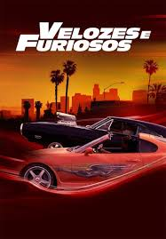
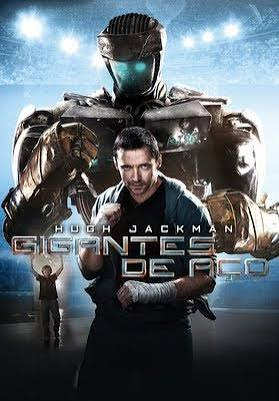
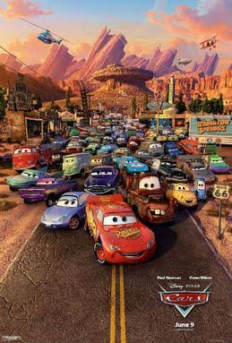

Velozes e Furiosos é uma franquia de filmes de ação centrada em corridas de rua, assaltos e espionagem. A série começou em 2001 com o filme "The Fast and the Furious" e se expandiu para incluir várias sequências, spin-offs e um universo cinematográfico. Os filmes são conhecidos por suas cenas de ação emocionantes, carros modificados e uma forte ênfase na família e amizade entre os personagens principais.
Creed é uma franquia de filmes de ação que segue a história de Adonis Johnson, o filho de Apollo Creed, após a morte do pai. A série explora temas de herança, luta e redenção, destacando a jornada de Adonis enquanto busca sua própria identidade no mundo do boxe.

Rocky Balboa é um personagem fictício e o protagonista da franquia "Rocky", criado por Sylvester Stallone. Ele é um boxeador americano que luta para alcançar seu sonho de se tornar campeão do mundo.

Gigantes de Aço é um filme de ficção científica e ação que se passa em um futuro próximo, onde o boxe é dominado por robôs controlados por humanos. A história segue um ex-boxeador que treina um robô para competir no ringue, explorando temas de tecnologia, humanidade e superação.

Carros é uma franquia de filmes de animação produzida pela Pixar Animation Studios e distribuída pela Walt Disney Pictures. A série segue as aventuras de carros antropomorfizados, com o personagem principal sendo Relâmpago McQueen, um carro de corrida ambicioso que aprende lições sobre amizade, humildade e trabalho em equipe ao longo de suas jornadas.